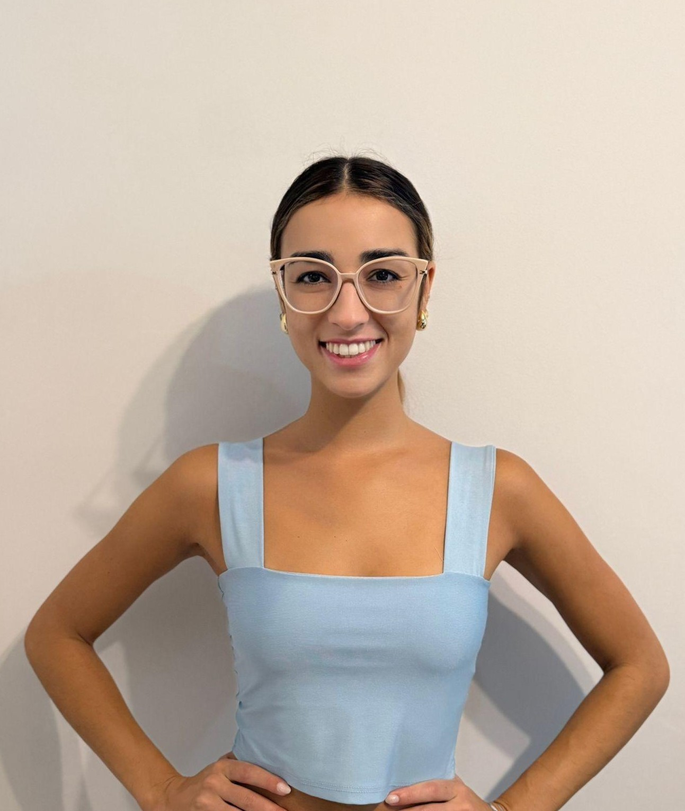
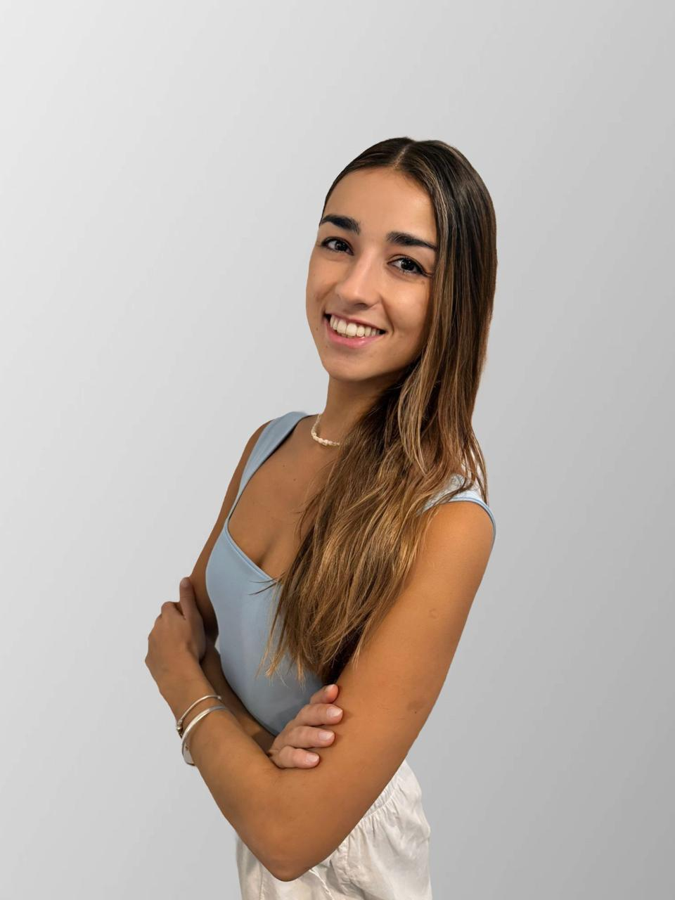
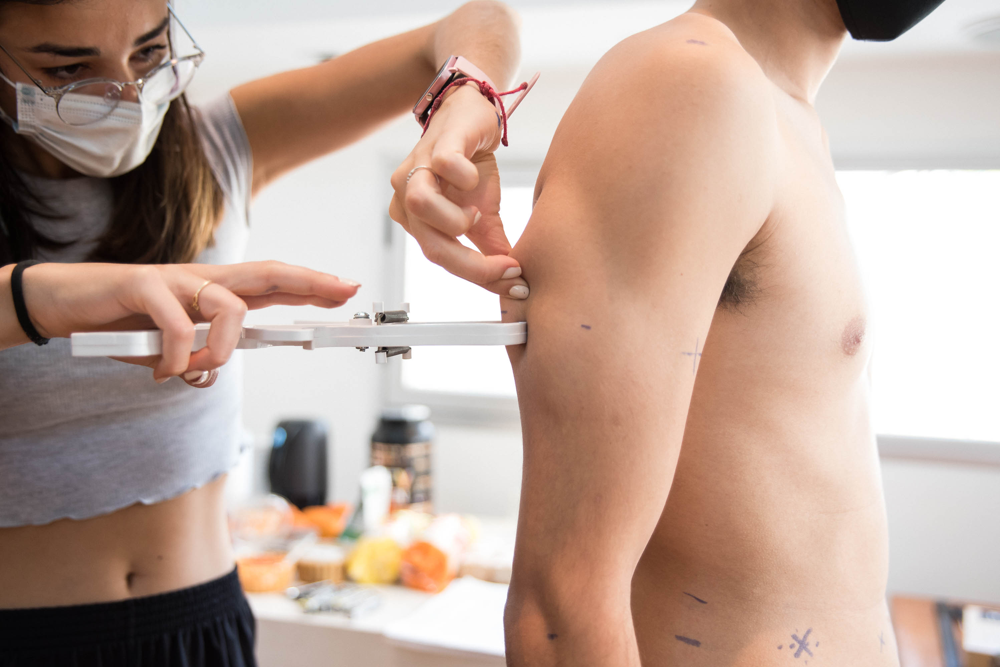

Planes nutricionales personalizados con antropometría ISAK II profesional. Para recomponer tu cuerpo —bajar grasa, ganar masa muscular— con datos reales, no estimaciones.

Formación universitaria especializada
Certificación internacional ISAK
Especialización en deportistas y dietas vegetales

Soy nutricionista deportiva y antropometrista certificada ISAK Nivel II. Trabajo en Palma de Mallorca con personas que entrenan en serio y quieren ver resultados reales, no solo bajar números en la balanza.
Mi enfoque combina alimentación basada en comida real —adaptada a tu estilo y tipo de dieta, sea omnívora, vegetariana o plant based— con seguimiento técnico de tu composición corporal a través de antropometría ISAK II. Esto significa que no estimo, mido. Y los datos guían las decisiones de tu plan.
El objetivo es que entiendas lo que pasa con tu cuerpo, veas cambios reales y termines sin depender de mí indefinidamente. Comer bien y tener datos claros se aprende.
Reservar consultaAtención presencial en Palma de Mallorca y online desde cualquier parte del mundo. Precios finales, sin sorpresas.
Antropometría ISAK II + plan nutricional personalizado + 2 seguimientos con re-medición. Proceso completo de 6 semanas (1 mes y medio) para bajar grasa y ganar masa muscular con datos reales. WhatsApp directo para dudas entre consultas.
Plan completo con recetas, menú semanal y cantidades específicas. Se adapta a tu tipo de alimentación —omnívora, vegetariana o plant based— y a tu estilo de vida. Incluye antropometría ISAK II con informe.
Medición profesional de composición corporal con estándar internacional. Incluye informe escrito y explicación personalizada de los resultados.
Primera consulta con plan personalizado + 2 controles de seguimiento por videollamada. Proceso completo a distancia, con WhatsApp directo para dudas entre consultas.
Primera consulta por videollamada con plan completo: recetas, menú semanal y cantidades. Se adapta a tu tipo de alimentación (omnívora, vegetariana, plant based) y estilo de vida.
Sesión de seguimiento por videollamada para revisar tu progreso, ajustar el plan y resolver dudas. Recomendado cada 15-20 días para mantener el ritmo.
La balanza te dice cuánto pesás. No te dice cuánto de ese peso es grasa, cuánto es músculo, cuánto es agua. La bioimpedancia del gimnasio estima, y varía 15-20% según hidratación y hora del día.
La antropometría ISAK II es distinta. Es un protocolo internacional que mide tu composición corporal con caliper calibrado, con margen de error por debajo del 5 %. La medición lleva 30 minutos.
Recibís un informe escrito con todos los datos, interpretación personalizada y comparativos si es seguimiento. Si trabajás con un entrenador o nutricionista, podés compartir el informe con ellos.
Es el estándar que usan equipos olímpicos. En Mallorca lo tenemos muy pocos profesionales certificados.

Sin sorpresas: sabés exactamente qué va a pasar desde que reservás hasta que ves resultados.
Coordinamos día y horario que te quede bien. Online o presencial en Palma.
Nos conocemos, analizamos tus hábitos y objetivos. Hago la medición ISAK II completa. 60 minutos en total.
En 2-3 días tenés tu plan nutricional, el informe antropométrico y recomendaciones específicas para vos.
Cada 6-8 semanas nueva medición y ajuste de plan. WhatsApp directo para dudas entre consultas.
"Con Jaz aprendí a lograr mis objetivos sin pasar hambre y disfrutando del proceso. Hoy me siento con más salud, energía y confianza en mí misma."
"Llevaba años entrenando y midiéndome con la balanza del baño. Cuando hicimos la antropometría con Jaz me di cuenta de cuánto estaba estimando mal. En el pack de recomposición vi cambios reales que solo entrenando no había visto."
"Soy vegetariana desde hace 5 años y siempre tuve la duda de si me estaban faltando cosas. Con Jaz entendí cómo armar mis comidas de verdad. Subí energía y dejé de sentirme cansada después de entrenar."
"Probé de todo: dietas restrictivas, apps, contar calorías. Nada me servía a largo plazo. Con Jazmin el enfoque fue distinto: comer real, medir bien, ajustar. La diferencia se notó en mis mediciones y en el espejo."
Si tu duda no está aquí, escribime por WhatsApp y te respondo personalmente.
Respondo personalmente en WhatsApp entre 9:00 y 20:00 de lunes a viernes.
Atiendo en consultorio en Palma y en centros y gimnasios partner repartidos por la isla. La dirección concreta depende del día y el servicio reservado — te la confirmo por WhatsApp al coordinar tu cita.
Para consultas online (plan nutricional, seguimiento, plant based) trabajo por videollamada desde cualquier parte del mundo.
El primer paso es escribirme. Te respondo personalmente y coordinamos día y horario que te quede bien.
Escribirme por WhatsApp